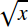

The MathML <msqrt> element is used to display square roots (no index is displayed). The square root accepts only one argument, which leads to the following syntax: <msqrt> base </msqrt>.
displaystylefalse, a more compact layout is used to display formulas. The main effect is that larger versions of operators are displayed, when displaystyle is set to true. See also movablelimits on {{ MathMLElement("mo") }}.#rgb, #rrggbb and HTML color names.#rgb, #rrggbb and HTML color names.Sample rendering: 
Rendering in your browser:
<math>
<msqrt>
<mi>x</mi>
</msqrt>
</math>
{{Specifications}}
{{Compat}}